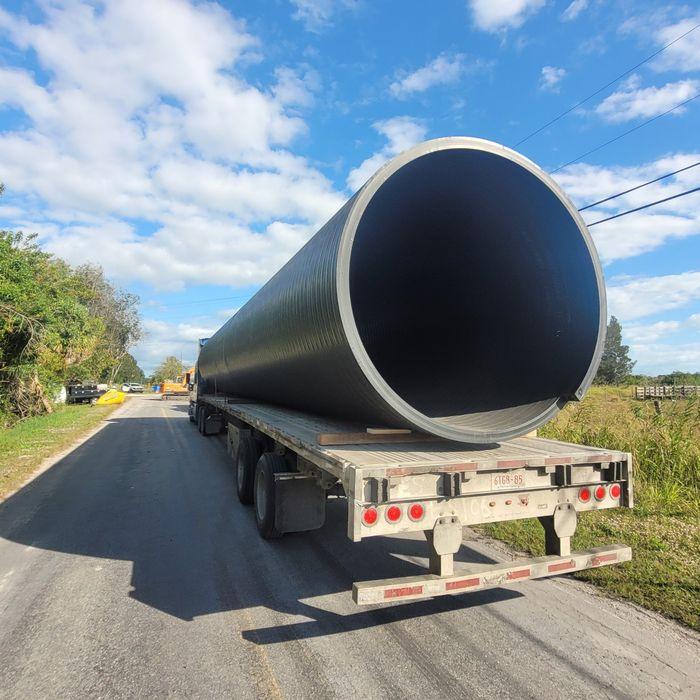
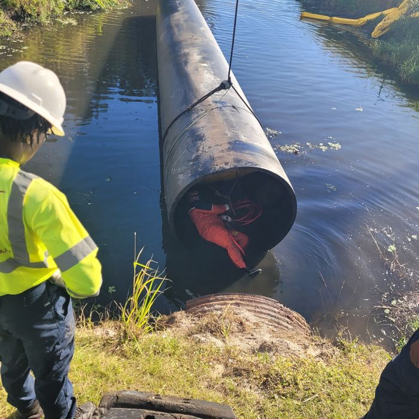
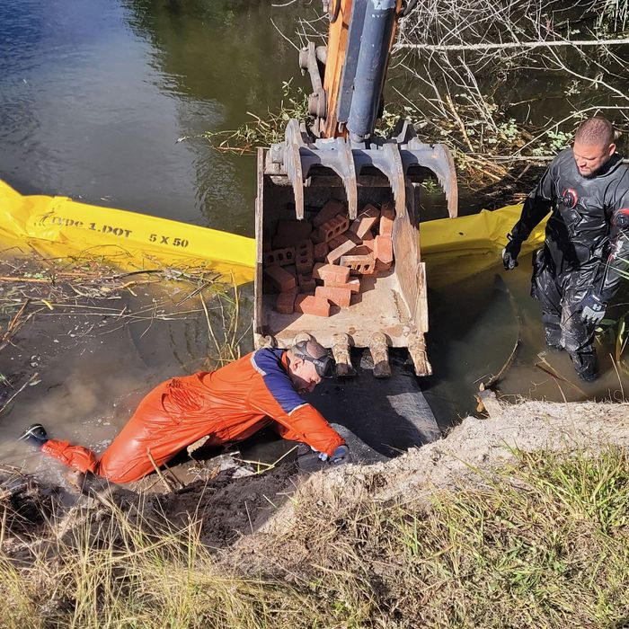

Commercial Diving Services
Real Work. Real Depth. Real Results.
This is where the serious work happens. Our commercial diving services support underwater construction, marine repairs, vessel work, and civic infrastructure projects across South Florida. From ports and marinas to municipal waterfronts and working vessels, our dive teams are trained to operate in demanding conditions where precision, safety, and experience actually matter.
If it’s underwater and needs to be built, repaired, or supported—we’re your crew.
Underwater Construction Support
Building Where You Can’t Stand
We work alongside marine contractors and engineers to support underwater construction projects that require skilled divers in active marine environments. Our teams assist with positioning, securing, and supporting underwater structures during installation and repair.
Construction support includes:
- Assistance with underwater structural placement
- Positioning and securing pilings and components
- Support for marine construction crews
- Underwater measurements and visual verification
- Pre- and post-construction inspections
We bring skilled hands to projects that don’t allow room for mistakes.



Underwater Repair & Maintenance
Fix the Problem Where It Starts
Underwater failures don’t wait for dry land. We provide in-water repair support for marine structures, vessels, and underwater hardware to reduce downtime and avoid unnecessary haul-outs.
Repair services include:
- Structural repair support below the waterline
- Underwater inspections and condition assessments
- Hardware replacement and fastening assistance
- Debris removal and obstruction clearing
- Pre- and post-repair verification
We fix problems at the source—underwater.
Vessel & Marine Asset Support
Working Boats Need Working Divers
We support commercial and working vessels with underwater maintenance, inspections, and repair assistance so operations can continue with minimal disruption.
Vessel services include:
- Underwater hull and running gear support
- Hardware inspections and servicing
- Debris and entanglement removal
- Structural inspection below the waterline
- Support for maintenance and refit projects
We keep working boats working.
Civic & Infrastructure Projects
Supporting the Systems That Support the City
We partner with municipalities, utilities, and civic agencies to support underwater projects that protect and maintain public infrastructure.
Civic and public-sector work includes:
- Waterfront and shoreline infrastructure support
- Bridge and pier inspection support
- Seawall and dock repair assistance
- Underwater inspections for public facilities
- Marine debris removal and safety support
This is quiet, behind-the-scenes work that keeps waterfronts functioning safely.
Safety, Training & Standards
Professional Diving Isn’t Guesswork
Our commercial dive teams follow established safety protocols and operate with professional-grade equipment suited for underwater construction and repair environments. Every job is approached with risk awareness, planning, and coordination with project stakeholders.
We don’t just jump in. We plan the dive.
Why Choose North & Southeast Diving for Commercial Diving?
- Experienced commercial divers
- Support for construction, repair, vessels, and civic projects
- In-water solutions that reduce downtime and costs
- Proven coordination with contractors, engineers, and municipalities
- Service across South Florida: Miami-Dade, Broward County, and the Palm Beaches
This is professional diving for real-world projects—not hobby work.
Request Commercial Diving Support
If your project needs experienced divers on-site and underwater, let’s talk.
We dive.
That’s what we do.